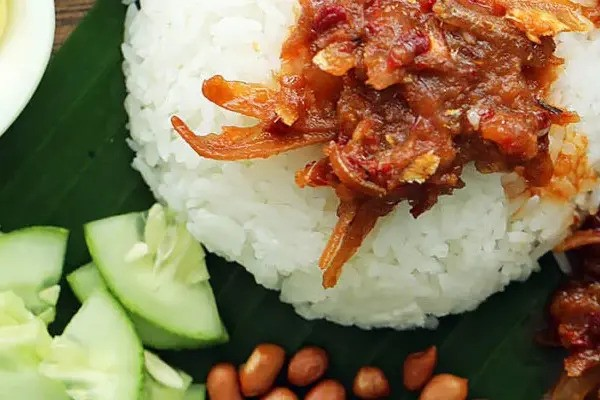

Home
Recipe Heading

Description
this is Description
Ingridients
- Rice
- Fish
- Dried Anchovies
- Shallots
- Cucumber
- Garlic
- Water
- Coconut Milk
- Cucumber
- Oil
- Belacan
- Salt
- Egg
- Red Onion
- Pandang Leaves
- Sugar
- Dried Red Chilies
- Peanuts
- Tamarind
Steps
- Start by rinsing the rice under running water a few times—just keep swishing it around until the water runs clear.
Once it’s clean, drain it completely. Now, add 1 ½ cups of water, some coconut milk, and a pinch of salt to the rice.
Toss in a couple of pandan leaves too—that’s what gives it that amazing fragrance. Cook the rice as you normally would,
and once it’s done, just pull out the pandan leaves and toss them.
- Next up is the spice paste! If you’ve got a mortar and pestle, throw in the shallots, garlic, dried chilies,
and prawn paste, and start pounding away until it all comes together. If that sounds like too much work,
no worries—you can just toss everything into a food processor and blitz it until it’s nice and smooth.
- For the tamarind water, just soak the tamarind pulp in some water for about 15 minutes.
Keep giving it a gentle squeeze to really get all the good stuff out of there.
Once it’s done soaking, strain out the pulp, and you’ll be left with the tamarind juice.
- Time for the fried anchovies! Give them a quick rinse under cold tap water a few times, then let them drain. In a pan, heat about 2 cups of oil.
Once it’s nice and hot, toss in the anchovies and fry them until they’re golden brown and crispy.
Use a strainer to scoop them out and let them drain on a paper towel-lined plate.
You can eat them on their own as a crunchy snack, or toss them into sambal to make sambal anchovies
- For the sambal ikan bilis (sambal anchovies), heat 2 tablespoons of frying oil in a pan over medium to low heat.
Add the spice paste and stir-fry until it’s nice and fragrant and turns a rich reddish color.
Toss in some onion rings and the fried anchovies, then mix everything together really well.
Now, pour in the tamarind juice, and season with salt and a bit of sugar. Let it simmer on low heat until the sauce thickens up.
Once it’s done, just set it aside.
- Let’s fry up some fish! First, clean the small fish and give them a good sprinkle of salt.
Then, heat up the rest of that frying oil in your pan and deep fry the fish until they’re nice and crispy.
- Time to assemble your nasi lemak! Grab a small bowl of the coconut rice you made earlier and carefully place it in the center of a plate lined with a banana leaf—if you’ve got one!
Then, arrange the fried fish, a couple of tablespoons of sambal, roasted peanuts, some cucumber slices, and a hard-boiled egg around the rice.
You can even spoon some sambal right on top of the rice if you like it extra spicy! Serve it up right away while it’s nice and fresh—so delicious!